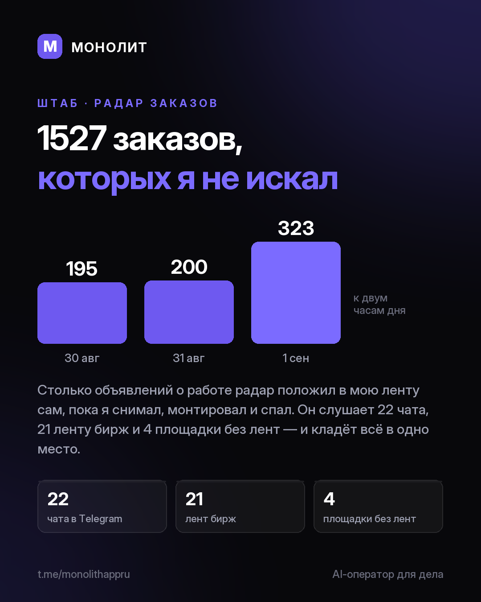

Дневник разработки · 01.09.2026
Радар заказов: как устроен и что даёт (канал ПОБУБНИМ, t.me/pobubnimzavideo)

Сорок чатов, лент и бирж. Теперь одна лента.
Смены я искал как все: чаты, hh, FL, доски. Заглянул в телефон не в тот час, и заказ ушёл тому, кто ответил первым. Написал себе радар: программа на моём компьютере читает 47 источников сразу и складывает всё в одну ленту.
За трое суток она положила 1527 объявлений. Почти четверть выходит с восьми вечера до восьми утра, сигнал приходит через секунды после публикации. 299 пришли с контактом заказчика прямо в тексте: отвечаешь сразу, не заходя на площадку.
Как он добывает заказы, как режет пост с двумя заказчиками на два заказа, как подключить свою площадку одной ссылкой и чего он принципиально не делает — по карточкам, там разобрано по шагам.
5 000 ₽ в год, это 417 ₽ в месяц. Считайте сами: сколько стоит ваша смена и сколько вы теряете, когда отвечаете вторым. Приложение МОНОЛИТ бесплатное, идёт бета, радар входит в модуль ШТАБ.
Пишите в личку @sbphotoshoter
МОНОЛИТ — учёт заказов, клиентов и денег одной фразой. Windows и Android, бесплатная бета.
Скачать Читать канал